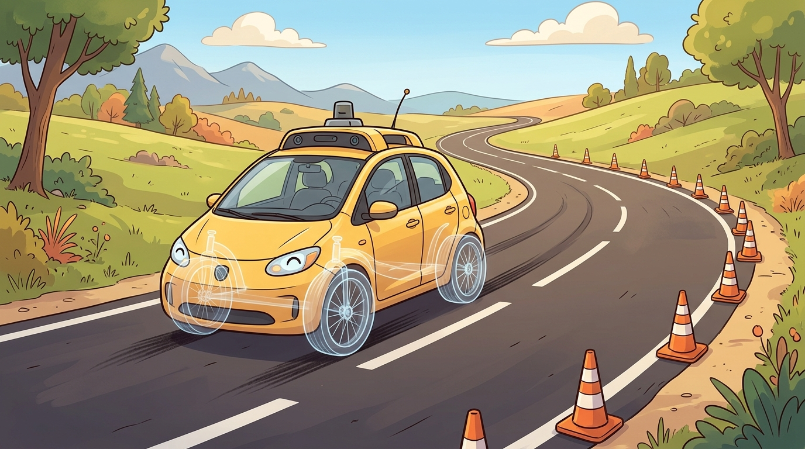

Geometry decides where the path goes; the tires, the friction circle, and the actuator limits decide whether the car can actually follow it.
On vehicle dynamics and control
An autonomous vehicle is a robot whose controller acts through tires, not abstract actions. Route decisions become steering, throttle, and braking through vehicle kinematics, tire forces, road friction, actuator limits, and comfort constraints.

Kinematic Bicycle Model
The kinematic bicycle model is the first useful model for route following and local planning. With position $(x,y)$, heading $\psi$, speed $v$, wheelbase $L$, and steering angle $\delta$:
$$\dot x = v\cos\psi, \qquad \dot y = v\sin\psi, \qquad \dot\psi = \frac{v}{L}\tan\delta, \qquad \dot v = a.$$
This model exposes non-holonomic motion and curvature limits. It is not enough for high-speed handling, but it is the right bridge between geometric planning and controller design.
A route polyline is not a drivable trajectory. The vehicle needs curvature, speed, acceleration, jerk, tire friction, and actuator limits that match the road and the platform.
Dynamic Bicycle Model
The dynamic bicycle model adds lateral velocity, yaw rate, tire slip, and lateral tire forces. It matters when speed, friction, braking, and evasive maneuvers dominate. A planner that ignores these effects can choose trajectories that are geometrically collision-free but dynamically unsafe. In practice this usually appears first as an interaction between curvature and the friction circle: the demanded lateral acceleration $a_y = v^2 \kappa$ exceeds what the tire-road pair can deliver, so the "successful" geometric plan arrives at the controller already broken.
The model boundary should be explicit. At low speeds and modest curvature, the kinematic bicycle model is often enough. At higher speeds, low friction, emergency braking, or evasive steering, tire slip angle, lateral stiffness, yaw inertia, and friction limits become part of the planning problem.
| Model | Best Use | Failure If Misused |
|---|---|---|
| Point mass | Coarse route timing and search | Ignores heading and steering |
| Kinematic bicycle | Lane following, parking, local paths | Misses tire saturation |
| Dynamic bicycle | Higher-speed maneuvers and stability | Requires tire and friction parameters |
| Full vehicle model | Validation and control calibration | Harder real-time optimization |
Control Choices
Pure pursuit and Stanley control are useful geometric baselines. LQR and MPC expose the state-space and constrained-optimization view. MPC becomes especially important when the controller must trade route progress, comfort, lane keeping, collision margins, and actuator limits in one horizon.
# Kinematic bicycle rollout for a local planner sanity check.
# Roll out a constant-curvature lane-following segment.
# Use the result to sanity-check heading and path change before simulator runs.
import math
x, y, psi, v = 0.0, 0.0, 0.0, 8.0
L, dt = 2.8, 0.1
for _ in range(20):
delta = math.radians(5.0)
x += v * math.cos(psi) * dt
y += v * math.sin(psi) * dt
psi += (v / L) * math.tan(delta) * dt
print(round(x, 2), round(y, 2), round(math.degrees(psi), 2))Expected output: the final heading should increase smoothly and the lateral displacement should stay consistent with a shallow arc rather than a sudden sideways jump. If the numbers imply an unrealistically sharp turn for the chosen steering angle and speed, the planner, units, or wheelbase model is inconsistent before closed-loop evaluation even starts.
Use CommonRoad for motion-planning scenarios, CARLA for closed-loop simulation, ROS 2 for stack integration, and vehicle-dynamics libraries or simulator models when tire forces, stability, latency, actuator limits, and parameter identification matter.
A path can be collision-free in geometry while being unsafe in dynamics. Low friction, high speed, tire saturation, or actuator delay can invalidate the plan after the planner has already declared success.
For a lane-change planner, compare the same path under dry asphalt and low-friction road assumptions. The useful metric combines lateral error with yaw rate, jerk, tire margin, controller saturation, and the fraction of the horizon that remains inside the vehicle's admissible acceleration envelope.
For vehicle kinematics, dynamics, and control, the useful test is simple: could a teammate point to the log line, plot, or trace that proves the idea changed the agent's next action?
Modern driving stacks increasingly combine learned prediction with optimization-based planning and control. The research challenge is keeping interaction-aware decisions tied to vehicle-dynamics feasibility.
Can you explain when a kinematic bicycle model is sufficient, when tire dynamics matter, and which metric would reveal the difference?
Implement pure pursuit and MPC for the same lane-change path. Compare lateral error, curvature, jerk, actuator saturation, and time-to-collision margin under dry and low-friction conditions.
Driving control becomes embodied when the planned path, vehicle model, tire limits, actuator delays, and safety margins are evaluated together.
Section References
CommonRoad. https://commonroad.in.tum.de/
Motion-planning scenario and benchmark framework.
CARLA Simulator. https://carla.org/
Open autonomous driving simulator for development, training, and validation.
TUM autonomous vehicles motion planning course. https://www.mos.ed.tum.de/en/avs/teaching/autonomous-vehicles-motion-planning-decision-making/
Course reference for graph-based planning, game-theoretic approaches, and RL in AV decision making.
Paden et al. "A Survey of Motion Planning and Control Techniques for Self-driving Urban Vehicles." https://arxiv.org/abs/1604.07446
Reference survey for planning and control in autonomous urban driving.
Rajamani. "Vehicle Dynamics and Control." https://books.google.pl/books/about/Vehicle_Dynamics_and_Control.html?id=eoy19aWAjBgC&redir_esc=y
Textbook reference for vehicle dynamics, tire models, and control.